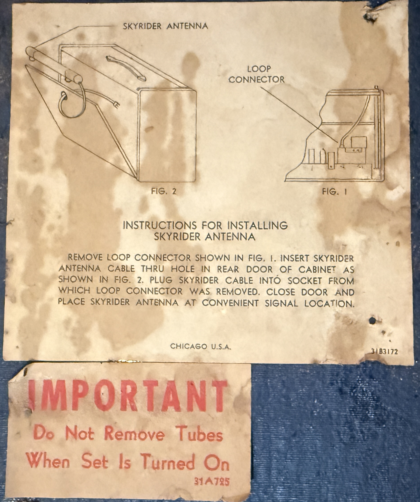
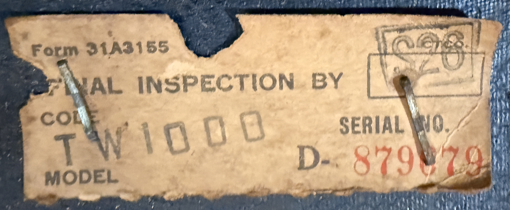
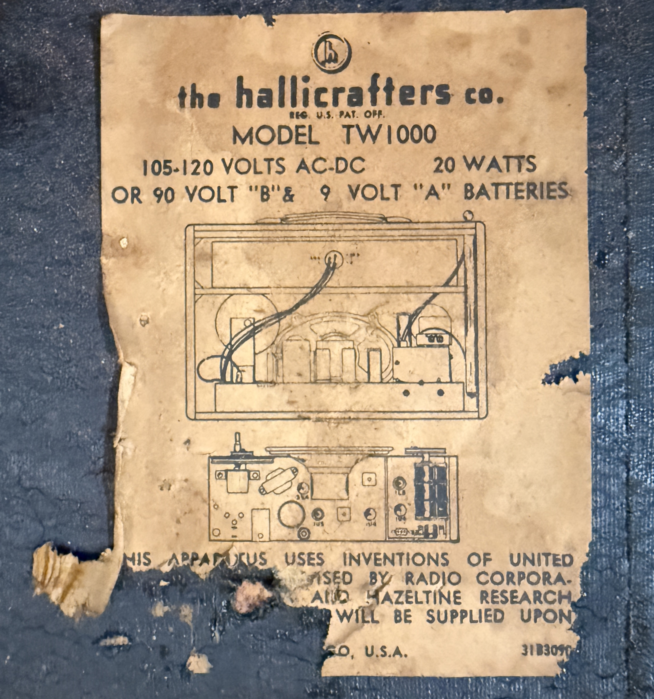
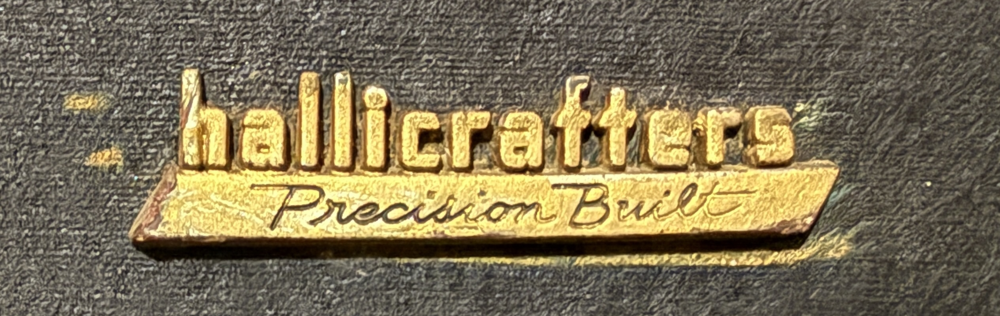

Hallicrafters World Wide TW-1000 Radio
Years of Production: 1953-1955
The Hallicrafters TW-1000, also known as the "Trans-World" radio, was a portable shortwave receiver designed for global communication enthusiasts. It was part of the post-war boom in consumer electronics and catered to the growing interest in international broadcasting.
Technical Specifications:
- Frequency Coverage: AM and Shortwave bands (up to 30 MHz)
- Power Supply: Operates on both AC and DC power
- Tube Complement: 6 vacuum tubes
- Speaker: Built-in dynamic speaker
- Weight: Approximately 15 pounds
Notable Features:
- Portable suitcase-style design with a rugged exterior
- Telescoping antenna for enhanced shortwave reception
- Dual power options for home and field use
- High sensitivity and selectivity for its time
Historical Context:
The TW-1000 was introduced during the golden age of shortwave radio, when listening to international broadcasts was a popular hobby. It was marketed as a reliable and portable solution for travelers, amateur radio operators, and enthusiasts who wanted to stay connected to the world. Its design was inspired by the Zenith Trans-Oceanic series, which dominated the portable shortwave market at the time.
Additional Details:
The Hallicrafters TW-1000 is now a sought-after collector's item, valued for its historical significance and unique design. It represents a time when radio was a primary medium for global communication and entertainment.
N4IXTs Hallicrafters World Wide (Trans-World) TW-1000 Other Images

Lid closed for transport.

Close up of the tuning area.

Time zone map on the bottom of the lid.

Back of the radio, lid closed.

Lid open to show rear of the radio. Sadly my unit is missing both the extending whip antenna as well as the 'Skyrider' antenna.

Close up of the insides.

Label showing how to attach the Skyrider Antenna, which would be a lot easier to do if my unit still had it, which it doesn't.

Serial Number / Inspection Tag

Label showing model number and electrical data.

Close up of the Hallicrafters logo from the front cover. Just because I think it looks cool.